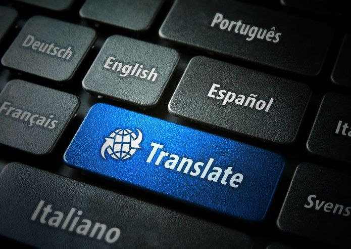

The Impact of Translation Devices and Translators

In an increasingly interconnected world, the need for effective communication across languages has become paramount. Translation devices and translators play a crucial role in breaking down language barriers, facilitating seamless interactions, and fostering global understanding. This essay delves into the impact of translation devices and human translators, highlighting their benefits, challenges, and potential solutions.
Translation devices, powered by advanced artificial intelligence (AI) algorithms, have revolutionized the way people communicate across language barriers. These devices utilize natural language processing (NLP) techniques to accurately translate spoken or written words in real-time, enabling individuals to converse effortlessly in different languages. The convenience and accessibility offered by translation devices have transformed various sectors, including tourism, business, and diplomacy. Travelers can navigate foreign countries with ease, businesses can engage in international trade more efficiently, and diplomats can engage in diplomatic negotiations without the constraints of language barriers.
Despite their numerous benefits, translation devices face several challenges. One significant challenge is the accuracy of translation, especially for languages with complex grammatical structures and nuances. While AI technology has made significant strides in improving translation accuracy, nuances in language, cultural contexts, and idiomatic expressions can still pose challenges. Additionally, translation devices may struggle with context-dependent translations, leading to inaccuracies or misunderstandings in communication. Furthermore, concerns regarding data privacy and security have been raised, as the use of translation devices often involves the processing and storage of sensitive information.
Another challenge faced by translation devices is the lack of accessibility for languages with limited resources or minority languages. Many translation devices prioritize widely spoken languages, leaving speakers of less common languages underserved. This disparity exacerbates existing inequalities in access to information and services for speakers of minority languages, hindering their participation in various aspects of society.
To address these challenges, a multi-faceted approach is needed. Firstly, continuous research and development efforts are essential to enhance the accuracy and reliability of translation devices, particularly for languages with complex structures and nuances. Investing in AI technologies that incorporate machine learning algorithms can help improve translation quality by analyzing vast amounts of linguistic data and learning from human feedback.
Furthermore, collaboration between technology companies, linguists, and native speakers is crucial to ensure that translation devices are culturally sensitive and contextually appropriate. Integrating cultural nuances and idiomatic expressions into translation algorithms can enhance accuracy and improve the overall user experience. Additionally, efforts should be made to expand language support for translation devices, including languages with limited resources or minority languages. This can be achieved through partnerships with local communities, language experts, and non-profit organizations dedicated to preserving linguistic diversity.
In conclusion, translation devices and translators play a vital role in bridging linguistic divides and fostering global communication. While translation devices offer convenience and accessibility, they also face challenges related to accuracy, accessibility, and privacy. By addressing these challenges through continuous innovation, collaboration, and inclusivity, translation devices can fulfill their potential as powerful tools for promoting cross-cultural understanding and collaboration in an increasingly interconnected world.